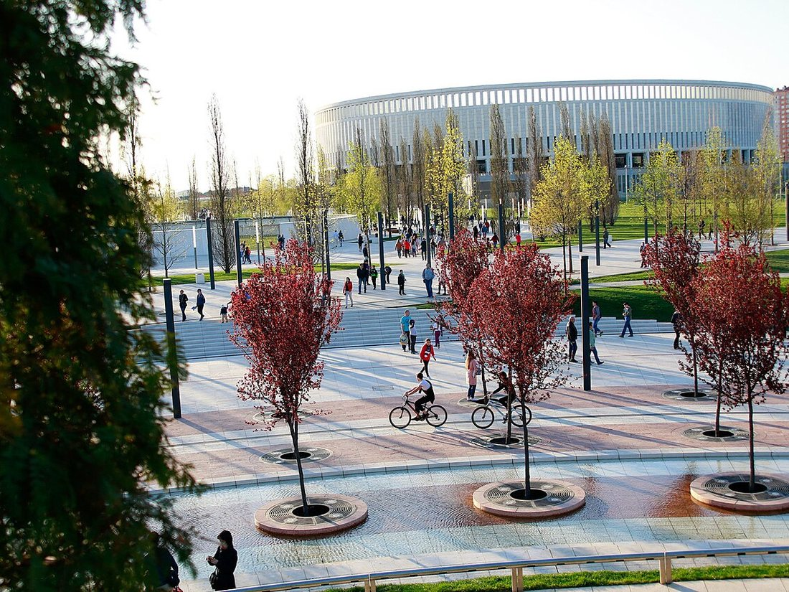
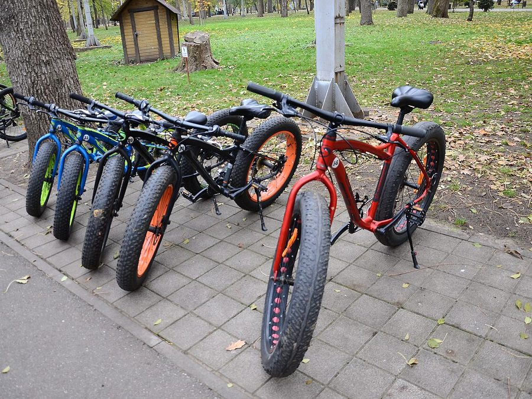

Кубанское кольцо
Ровный асфальт вдоль реки, два коротких подъёма. Хорошо ехать утром, пока не началось движение.
Подробнее →Личный проект · 2026
Катаюсь на велосипеде пятый год. Начинал с кругов вокруг дома, сейчас выбираюсь за город почти каждые выходные. Здесь собраны маршруты по Краснодару и краю, которые я проехал сам, и вещи, которые правда пригодились в дороге.
Смотреть маршруты
Ровный асфальт вдоль реки, два коротких подъёма. Хорошо ехать утром, пока не началось движение.
Подробнее →Асфальт и гравий, много открытых участков. В жару лучше стартовать часов в семь, пока не припекает.
Подробнее →Самый простой маршрут из списка. Можно проехать на обычном городском велосипеде, если не спешить.
Подробнее →
Первый велосипед появился классе в седьмом — обычный горный, с алюминиевой рамой. Первая поездка была до Кубани и обратно, километров двенадцать. Домой приехал с мыслью, что тридцать — это уже подвиг.
Через месяц втянулся. Появились перчатки, насос, запасная камера. Сейчас спокойно проезжаю 60–70 км за день, но гонки и рекорды меня не интересуют. Нравится сам процесс и места, куда можно доехать без машины.
Сайт задумывал как записную книжку. Если пригодится ещё кому-то — будет совсем хорошо.
В субботу едем «Кубанское кольцо». Сбор в 8:30 у входа в Чистяковскую рощу, темп спокойный — 18–20 км/ч, без гонок. Берите воду и запасную камеру.
сб · 8:30